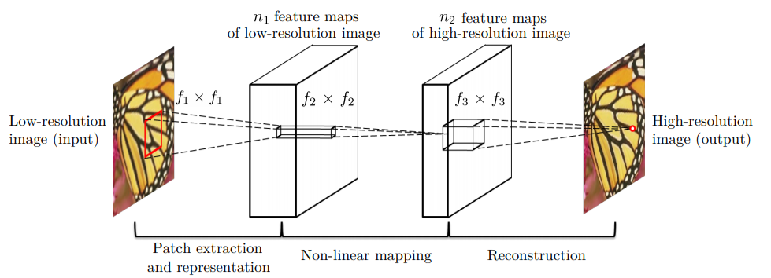
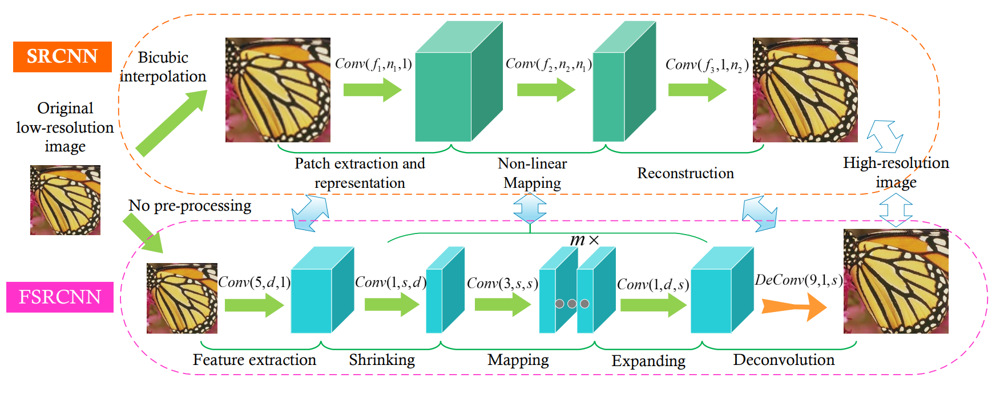
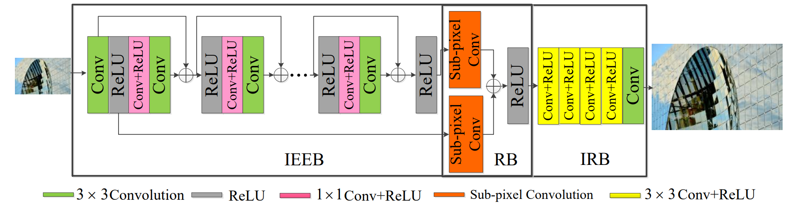

Super-Resolution is the process of taking an input image and upscaling it to a higher resolution, ideally with minimal loss to detail and image quality. Convolution Neural Networks(CNNs) have proven to be effective structures in solving Super-Resolution problems. Over the course of the project, we implemented three different Single-Image Super Resolution networks, a simple 3 layer Super-Resolution Convolutional Neural Network (SRCNN) as proposed Chao Dong, the faster and stronger Fast Super-Resolution Convolutional Neural Network (FSRCNN), adapted by the same team, and an even stronger and more complex Lightweight Enhanced SRCNN (LESRCNN), as proposed by Chunwei Tian.
The SRCNN consists of 3 convolutional layers, with RELU activation functions after each one, and a regression layer at the end, each with randomized weights. The first convolutional layer is designed to extract patches from the input, representing each as a high-dimensional vector. The second non-linearly maps each vector onto another. The third layer aggregates the representations together, constructing a high-resolution output image. To train the network we randomly extracted [32/64/96/128] 33x33 patches from our training dataset as input to the network.
The FSRCNN network consists of an initial patch extraction layer, followed by a feature dimension shrinking layer to reduce computation complexity. We next have 2-4 non-linear mapping layers with medium sized(3x3) filters, designed to improve the network. After that, we have an expanding layer, acting as the inverse of the shrinking layer, followed by a transposed convolutional layer which upsamples the data into a HR image. Each layer except for the transpose is followed by a PRELU activation function [2]. To train the network, we randomly extracted 7x7 patches from each image in our training dataset as input into the network. After some experimentation, we found that having only 2 mapping layers works best, and decreases training time substantially.
The LESRCNN network consists of three blocks, an “information extraction and enhancement block (IEEB), a reconstruction block (RB), and an information refinement block (IRB)” [3]. The IEEB block extracts and aggregates lower resolution features and uses a residual training method, applying element-wise addition with each odd convolution to keep accurate hierarchical information. Then, the RB block performs residual learning on the output of the IEEB first and last ReLU layer. For our scaling factor r, the RB convolves sum of the two layers, expanding the number of channels to be r^2 times larger, creating a (H x W x C*r^2) tensor shaping. Then, this tensor is passed through the shuffle layer outputting an upsampled (rH x rW x C) tensor which blends information from the channels [4]. Finally, the IRB processes the inputted course high frequencies to increase accuracy of the high resolution image with 4 convolution and ReLU layers [3].
Through this project there was many road blocks whe trying to understand each network before implementing them. The biggest of them being the sub-pixel convolution layer. Depending on how much we wanted to increase the resultion, either by 2x or 3x the creation of the sub-pixel layer would be different. Luckily we found a 2x layer. With this example it was easy to create a sub-pixel layer turning 9 seperate layers into 1 image.